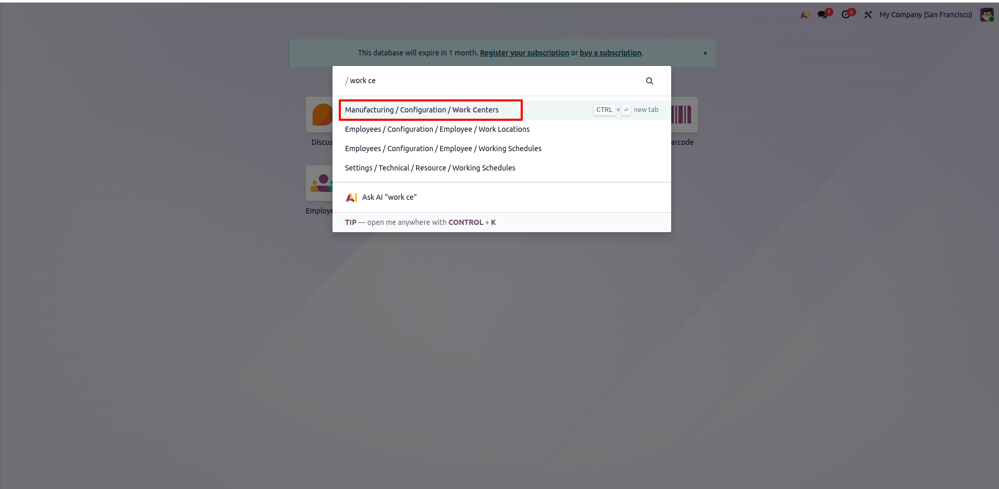
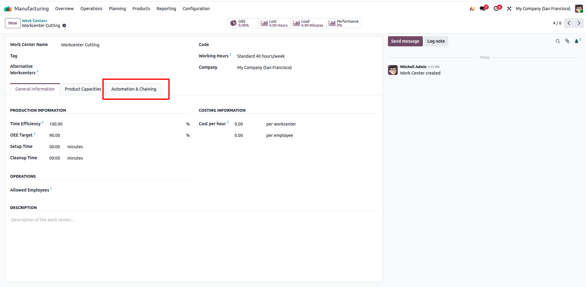
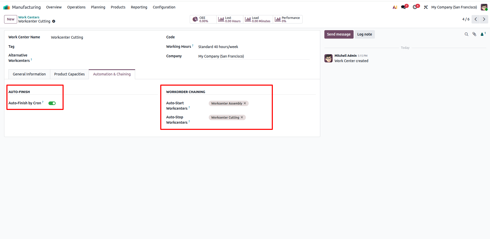
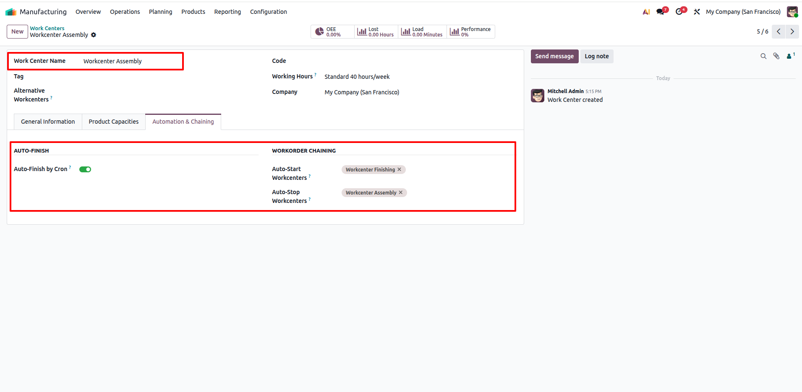
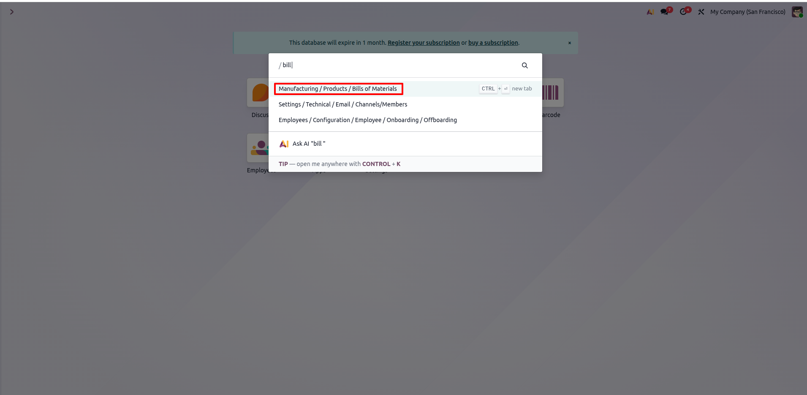
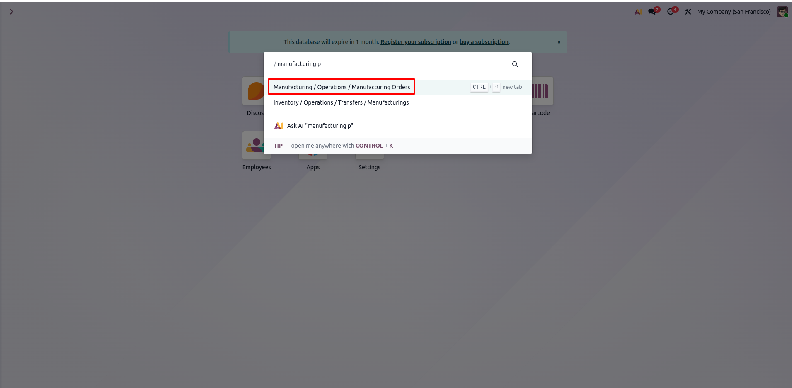
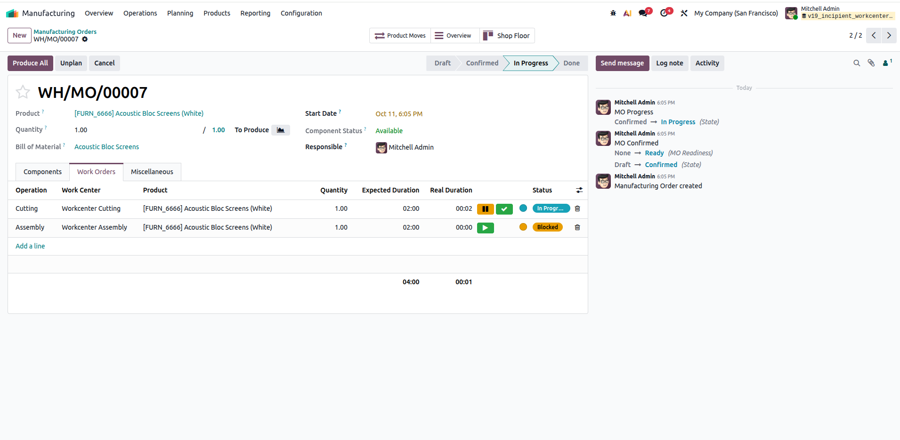
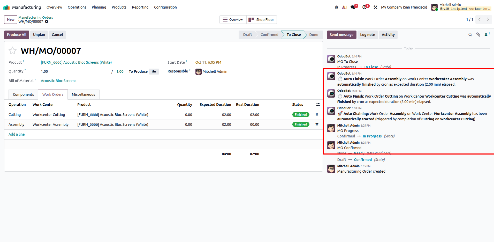

Workcenter Auto Start/Stop Chaining
Incipient Enterprise SuiteWorkcenter Auto Start/Stop Chaining Management
Configure dynamic links between workcenters to automatically start or stop work orders when tasks on related workcenters are finished, optimizing your manufacturing workflows.
Need Setup Assistance?
Free pre-sales consultation and lifetime support for every installation.
Contact Technical SupportBuilt for Manufacturing Efficiency
Eliminate manual operator interventions with automated work order chaining
Auto Start/Stop
Trigger EventsAutomatically trigger the start or stop of linked work orders upon finishing a task in a specific workcenter, streamlining production.
Auto-Finish
Duration CronAutomatically finish work orders in progress when their expected duration has elapsed using a dedicated background cron job.
Seamless Linking
Native IntegrationIntegrates smoothly with native Odoo MRP and Workcenters to manage dependencies without manual configuration overhead.
The Business Transformation
How Workcenter Auto Start/Stop Chaining solves standard Odoo manufacturing gaps
Default Odoo Limitation
- ✕ Operators must manually start and stop sequential work orders.
- ✕ Tracking inter-workcenter dependencies requires constant monitoring.
- ✕ Time is lost waiting for operators to update system status accurately.
Automated Manufacturing Flow
- ✓ Work orders automatically start or stop based on linked workcenter triggers.
- ✓ Cron job automatically finishes work orders that reach their expected duration.
- ✓ Drastically reduces manual clicks and boosts real-time accuracy of shop floor status.
Comprehensive Feature Suite
6 Core capabilities engineered for manufacturing automation
Configurable Links
Easily configure links between different workcenters directly from the workcenter settings.
Auto-Start Work Orders
Trigger the automatic start of subsequent work orders when preceding operations finish.
Auto-Stop Work Orders
Configure rules to automatically stop running work orders in linked workcenters.
Duration Cron Job
A background process that reliably auto-finishes work orders once their expected duration elapses.
Native MRP Integration
Fully compatible with Odoo's core manufacturing orders and work order routing mechanics.
Zero External Dependencies
Pure Odoo framework extension requiring zero external libraries or custom server setups.
Step-by-Step Visual Walkthrough
How Workcenter Auto Start/Stop Chaining operates in Odoo
Access Work Centers Configuration
Navigate to Manufacturing > Configuration > Work Centers from the main Odoo navigation menu or search bar.
This is where you manage production work centers and set up automated linking rules between different manufacturing stages.

Open Automation & Chaining Tab
Open any work center (e.g., Workcenter Cutting) to view its details. Notice the dedicated Automation & Chaining tab added directly into the work center form.
This tab houses all configuration settings for automatic work order initiation, pause triggers, and expected duration auto-completion.

Configure Initial Workcenter Triggers
Configure the automation and chaining rules for the initial stage (Workcenter Cutting):
- Auto-Finish by Cron: Toggle ON to automatically finish work orders on this workcenter once their expected duration expires.
- Auto-Start Workcenters: Select Workcenter Assembly so that completing a work order here instantly starts the next operation.
- Auto-Stop Workcenters: Set Workcenter Cutting (or related workcenters) that should automatically pause/stop when triggered.

Chain Subsequent Workcenters
Open downstream work centers (e.g., Workcenter Assembly) to establish continuous multi-stage pipeline flow:
- Auto-Finish by Cron: Enabled to maintain continuous automated tracking.
- Auto-Start Workcenters: Link to subsequent stages (e.g., Workcenter Finishing) for sequential hands-free progression.
- Auto-Stop Workcenters: Automatically stop or hold active operations as needed.

Define Routing in Bill of Materials (BoM)
Navigate to Manufacturing > Products > Bills of Materials to verify or set up operations for manufactured products.
Assign the sequential operations to your configured work centers (e.g., Cutting followed by Assembly) and specify expected durations for accurate auto-finish scheduling.

Create & Confirm Manufacturing Order
Go to Manufacturing > Operations > Manufacturing Orders to create and confirm a production order.
Upon confirming the Manufacturing Order, Odoo automatically generates the chained work orders corresponding to the Bill of Materials routing.

Start Work Order & Active Tracking
On the Manufacturing Order (e.g., WH/MO/00007), open the Work Orders tab and begin the first operation (Cutting on Workcenter Cutting).
The operation status updates to In Progress with active timer tracking, while downstream operations (such as Assembly on Workcenter Assembly) remain queued and ready.

Automatic Auto-Finish, Chaining & Chatter Audit
Experience seamless end-to-end automation with full traceability:
- ⏱️ Auto Finish by Cron: When the expected duration (2.00 min) elapses, the cron automatically completes the Cutting operation without operator intervention.
- 🚀 Auto Chaining: Completion of Cutting immediately auto-starts Assembly on Workcenter Assembly.
- 📋 Transparent Audit Logs: OdooBot posts detailed notes directly to the MO chatter for every automated start and finish event, safely transitioning the order to To Close.

Frequently Asked Questions
Click any question below to expand or collapse details